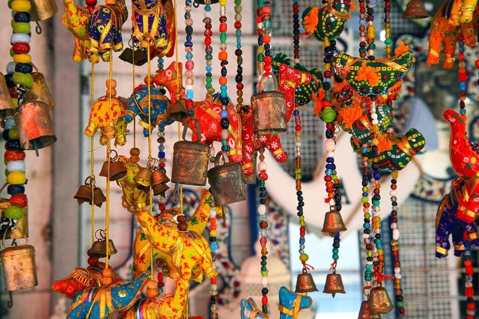
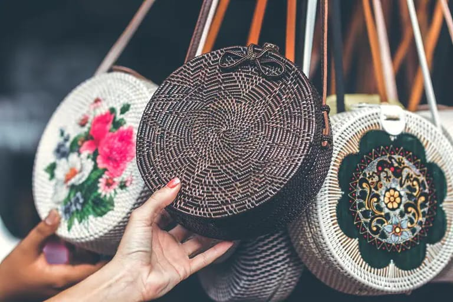

Los collares artesanales son piezas de joyería únicas y hechas a mano que se utilizan para adornar el cuello. Son creaciones artísticas que reflejan la creatividad y el estilo del artesano. Estos collares suelen estar elaborados con una variedad de materiales, como cuentas de...
Ver másLos bolsos artesanales son accesorios funcionales y estilizados que son creados a mano con habilidad y creatividad. Son piezas únicas que destacan por su diseño original y la atención al detalle en su confección. Estos bolsos son elaborados por artesanos utilizando una variedad de...
Ver másLas canastas artesanales son recipientes tejidos a mano que se utilizan para transportar, almacenar o exhibir objetos. Son creaciones tradicionales que han sido transmitidas de generación en generación, y reflejan la rica historia y cultura de diferentes comunidades artesanales.
Ver másEstoy realmente impresionada con la calidad y belleza del collar artesanal que compré. Cada detalle está cuidadosamente elaborado, y las cuentas de vidrio en tonos brillantes se combinan perfectamente. Es un verdadero tesoro que destaca en cualquier ocasión. ¡Definitivamente volveré a adquirir más piezas únicas como esta!
Quiero expresar mi gratitud por el magnífico bolso artesanal que adquirí. El trabajo manual y la dedicación que se reflejan en cada puntada son impresionantes. Además, el uso de tejidos naturales y la combinación de colores y patrones crean una obra de arte funcional y elegante. Estoy encantada de poder llevar esta pieza única y apoyar a los talentosos artesanos locales..